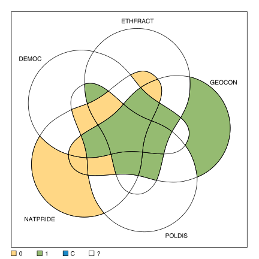
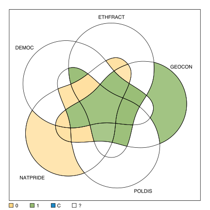

Function to create a truth table from all types of calibrated data (binary crisp, multi-value crisp and fuzzy). For fuzzy data, an improved verson of Ragin's (2008) procedure is applied to assign cases to the vector space corners (the truth table rows, combinations of causal conditions).
truthTable(data, outcome = "", conditions = "", incl.cut = 1, n.cut = 1, pri.cut = 0, exclude = NULL, complete = FALSE, use.letters = FALSE, show.cases = FALSE, dcc = FALSE, sort.by = "", inf.test = "", ...)
data |
A data frame containing calibrated causal conditions and an outcome | |||
outcome |
String, the name of the outcome. | |||
conditions |
A single string containing the conditions' (columns) names separated by commas, or a character vector of conditions' names. | |||
incl.cut |
The inclusion cutoff(s): either a single value for the presence of the output, or a vector of length 2, the second for the absence of the output. | |||
n.cut |
The minimum number of cases under which a truth table row is declared as a remainder. | |||
pri.cut |
The minimal score for the PRI - proportional reduction in
inconsistency, under which a truth table row is declared as negative. |
|||
exclude |
A vector of row numbers from the truth table, to code as negative output configurations. | |||
complete |
Logical, print complete truth table. | |||
use.letters |
Logical, use letters instead of causal conditions' names. | |||
show.cases |
Logical, print case names. | |||
dcc |
Logical, if show.cases = TRUE, the cases being displayed
are the deviant cases consistency in kind. |
|||
sort.by |
Sort the truth table according to various columns. | |||
inf.test |
Specifies the statistical inference test to be performed
(currently only "binom") and the critical significance level. It can be either
a vector of length 2, or a single string containing both, separated by a comma. |
|||
... |
Other arguments (mainly for backward compatibility). |
The data should always be provided as a data frame, with calibrated columns.
Calibration can be either crisp, with 2 or more values starting from 0, or fuzzy with continous scores from 0 to 1. Raw data containing relative frequencies can also be continous between 0 and 1, but these are not calibrated, fuzzy data.
Some columns can contain the placeholder "-" indicating a “don't care”,
which is used to indicate the temporal order between other columns in tQCA. These
special columns are not causal conditions, hence no parameters of fit will be
calculated for them.
The argument outcome specifies the column name to be explained.
If the outcome is a multivalue column, it can be specified in curly bracket notation,
indicating the value to be explained (the others being automatically converted to
zero).
The outcome can be negated using a tilde operator ~X. The logical argument
neg.out is now deprecated, but still backwards compatible. Replaced by the tilde
in front of the outcome name, it controls whether outcome is to be explained or
its negation. Note that using both neg.out = TRUE and a tilde ~
in the outcome name cancel each other out.
If the outcome column is multi-value, the argument outcome should use the standard
curly-bracket notation X{value}. Multiple values are allowed, separated by a comma
(for example X{1,2}). Negation of the outcome can also be performed using the tilde
~ operator, for example ~X{1,2}, which is interpreted as:
"all values in X except 1 and 2" and it becomes the new outcome to be explained.
The argument conditions specifies the causal conditions' names among the other
columns in the data. When this argument is not specified, all other columns except for
the outcome are taken as causal conditions.
A good practice advice is to specify both outcome and conditions
as upper case letters. It is possible, in a next version, to negate outcomes using lower case
letters, situation in which it really does matter how the outcome and/or conditions are
specified.
The argument incl.cut replaces the (deprecated, but still backwards compatible)
former arguments incl.cut1 and incl.cut0. Most of the analyses use
the inclusion cutoff for the presence of the output (code "1"). When users need
both inclusion cutoffs (see below), incl.cut can be specified as a vector of
length 2, in the form: c(ic1, ic0) where:
ic1 |
is the inclusion cutoff for the presence of the output, |
a minimum sufficiency inclusion score above which the output
value is coded with "1". |
|
ic0 |
is the inclusion cutoff for the absence of the output, |
If not specifically declared, the argument ic0 is automatically set equal to
ic1, but otherwise ic0 should always be lower than ic1.
Using these two cutoffs, the observed combinations are coded with:
"1" |
if they have an inclusion score above ic1 |
"C" |
if they have an inclusion score below ic1 and above ic0 (contradiction) |
The argument n.cut specifies the frequency threshold under which a truth
table row is coded as a remainder, irrespective of its inclusion score.
When argument show.cases is set to TRUE, the case names will be
printed at their corresponding row in the truth table. The resulting object always contains
the cases for each causal combination, even if not printed on the screen (the print function
can later be used to print them).
The sort.by argument orders all configurations by any of the columns
present in the truth table. Typically, sorting occurs by their outcome value,
and/or by their inclusion score, and/or by their frequency, in any order.
Sorting decreasingly (the default) or increasingly can be specified adding the signs
- or + next after the column name in argument
sort.by (see examples). Note that - is redundant because
it is the default anyways.
The order specified in this vector is the order in which the configurations will be sorted. When sorting based on the OUTput column, remainders will always be sorted last.
The argument use.letters controls using the original names of the causal
conditions, or replace them by single letters in alphabetical order. If the
causal conditions are already named with single letters, the original letters
will be used.
The argument inf.test combines the inclusion score with a statistical
inference test, in order to assign values in the output column OUT. For the moment, it
is only the binomial test, which needs crisp data (it doesn't work with fuzzy sets).
Following a similar logic as above, for a given (specified) critical significance level,
the output for a truth table row will be coded as:
"1" |
if the true inclusion score is significanly higher than ic1, |
"C" |
contradiction, if the true inclusion score is not significantly higher than ic1 |
but significantly higher than ic0, |
It should be noted that statistical tests perform well only when the number of cases is large,
otherwise they are usually not significant. For a low number of cases, depending on the inclusion
cutoff value(s), it will be harder to code a value of "1" in the output, and also
harder to obtain contradictions if the true inclusion is not signficantly higher than ic0.
The argument complete controls how to print the table on the screen, either
complete (when set to TRUE), or just the observed combinations (default).
For up to 7 causal conditions, the resulting object will always contain the complete
truth table, even if it's not printed on the screen. This is useful for multiple reasons:
researchers like to manually change output values in the truth table (sometimes including
in this way a remainder, for example), and it is also useful to plot Venn diagrams, each
truth table row having a correspondent intersection in the diagram.
tt |
The truth table itself. | |||
indexes |
The line numbers for the observed causal configurations. | |||
noflevels |
A vector with the number of values for each causal condition. | |||
initial.data |
The initial data. | |||
recoded.data |
The crisp version of the initial.data, if fuzzy. |
|||
cases |
The cases for each observed causal configuration. | |||
options |
The command options used. | |||
rowsorder |
The order of the rows after sorting, if using sort.by. |
|||
minmat |
A membership scores matrix of cases in the observed truth table combinations. |
Cronqvist, L.; Berg-Schlosser, D. (2009) “Multi-Value QCA (mvQCA)”, in Rihoux, B.; Ragin, C. (eds.) Configurational Comparative Methods. Qualitative Comparative Analysis (QCA) and Related Techniques, SAGE.
Dusa, A. (2019) QCA with R. A Comprehensive Resource. Springer International Publishing.
Lipset, S.M. (1959) “Some Social Requisites of Democracy: Economic Development and Political Legitimacy”, American Political Science Review vol.53, pp.69-105.
Ragin, C.C. (1987) The Comparative Method: Moving beyond Qualitative and Quantitative Strategies. Berkeley: University of California Press.
Ragin, C.C. (2008) Redesigning Social Inquiry: Fuzzy Sets and Beyond. Chicago: University of Chicago Press.
Ragin, C.C.; Strand, S.I. (2008) “Using Qualitative Comparative Analysis to Study Causal Order: Comment on Caren and Panofsky (2005).” Sociological Methods & Research vol.36, no.4, pp.431-441.
Schneider, C.Q.; Wagemann, C. (2012) Set-Theoretic Methods for the Social Sciences: A Guide to Qualitative Comparative Analysis (QCA). Cambridge: Cambridge University Press.
# ----- # Lipset binary crisp data ttLC <- truthTable(LC, "SURV") # inspect the truth table ttLCOUT: outcome value n: number of cases in configuration incl: sufficiency inclusion score DEV URB LIT IND STB OUT n incl PRI 1 0 0 0 0 0 0 3 0.000 0.000 2 0 0 0 0 1 0 2 0.000 0.000 5 0 0 1 0 0 0 2 0.000 0.000 6 0 0 1 0 1 0 1 0.000 0.000 22 1 0 1 0 1 1 2 1.000 1.000 23 1 0 1 1 0 0 1 0.000 0.000 24 1 0 1 1 1 1 2 1.000 1.000 31 1 1 1 1 0 0 1 0.000 0.000 32 1 1 1 1 1 1 4 1.000 1.000# print the cases too, even if not specifically asked for print(ttLC, show.cases = TRUE)OUT: outcome value n: number of cases in configuration incl: sufficiency inclusion score DEV URB LIT IND STB OUT n incl PRI cases 1 0 0 0 0 0 0 3 0.000 0.000 GR,PT,ES 2 0 0 0 0 1 0 2 0.000 0.000 IT,RO 5 0 0 1 0 0 0 2 0.000 0.000 HU,PL 6 0 0 1 0 1 0 1 0.000 0.000 EE 22 1 0 1 0 1 1 2 1.000 1.000 FI,IE 23 1 0 1 1 0 0 1 0.000 0.000 AU 24 1 0 1 1 1 1 2 1.000 1.000 FR,SE 31 1 1 1 1 0 0 1 0.000 0.000 DE 32 1 1 1 1 1 1 4 1.000 1.000 BE,CZ,NL,UK# the printing function also supports the complete version print(ttLC, show.cases = TRUE, complete = TRUE)OUT: outcome value n: number of cases in configuration incl: sufficiency inclusion score DEV URB LIT IND STB OUT n incl PRI cases 1 0 0 0 0 0 0 3 0.000 0.000 GR,PT,ES 2 0 0 0 0 1 0 2 0.000 0.000 IT,RO 3 0 0 0 1 0 ? 0 - - 4 0 0 0 1 1 ? 0 - - 5 0 0 1 0 0 0 2 0.000 0.000 HU,PL 6 0 0 1 0 1 0 1 0.000 0.000 EE 7 0 0 1 1 0 ? 0 - - 8 0 0 1 1 1 ? 0 - - 9 0 1 0 0 0 ? 0 - - 10 0 1 0 0 1 ? 0 - - 11 0 1 0 1 0 ? 0 - - 12 0 1 0 1 1 ? 0 - - 13 0 1 1 0 0 ? 0 - - 14 0 1 1 0 1 ? 0 - - 15 0 1 1 1 0 ? 0 - - 16 0 1 1 1 1 ? 0 - - 17 1 0 0 0 0 ? 0 - - 18 1 0 0 0 1 ? 0 - - 19 1 0 0 1 0 ? 0 - - 20 1 0 0 1 1 ? 0 - - 21 1 0 1 0 0 ? 0 - - 22 1 0 1 0 1 1 2 1.000 1.000 FI,IE 23 1 0 1 1 0 0 1 0.000 0.000 AU 24 1 0 1 1 1 1 2 1.000 1.000 FR,SE 25 1 1 0 0 0 ? 0 - - 26 1 1 0 0 1 ? 0 - - 27 1 1 0 1 0 ? 0 - - 28 1 1 0 1 1 ? 0 - - 29 1 1 1 0 0 ? 0 - - 30 1 1 1 0 1 ? 0 - - 31 1 1 1 1 0 0 1 0.000 0.000 DE 32 1 1 1 1 1 1 4 1.000 1.000 BE,CZ,NL,UK# formally asking the complete version truthTable(LC, "SURV", complete = TRUE)OUT: outcome value n: number of cases in configuration incl: sufficiency inclusion score DEV URB LIT IND STB OUT n incl PRI 1 0 0 0 0 0 0 3 0.000 0.000 2 0 0 0 0 1 0 2 0.000 0.000 3 0 0 0 1 0 ? 0 - - 4 0 0 0 1 1 ? 0 - - 5 0 0 1 0 0 0 2 0.000 0.000 6 0 0 1 0 1 0 1 0.000 0.000 7 0 0 1 1 0 ? 0 - - 8 0 0 1 1 1 ? 0 - - 9 0 1 0 0 0 ? 0 - - 10 0 1 0 0 1 ? 0 - - 11 0 1 0 1 0 ? 0 - - 12 0 1 0 1 1 ? 0 - - 13 0 1 1 0 0 ? 0 - - 14 0 1 1 0 1 ? 0 - - 15 0 1 1 1 0 ? 0 - - 16 0 1 1 1 1 ? 0 - - 17 1 0 0 0 0 ? 0 - - 18 1 0 0 0 1 ? 0 - - 19 1 0 0 1 0 ? 0 - - 20 1 0 0 1 1 ? 0 - - 21 1 0 1 0 0 ? 0 - - 22 1 0 1 0 1 1 2 1.000 1.000 23 1 0 1 1 0 0 1 0.000 0.000 24 1 0 1 1 1 1 2 1.000 1.000 25 1 1 0 0 0 ? 0 - - 26 1 1 0 0 1 ? 0 - - 27 1 1 0 1 0 ? 0 - - 28 1 1 0 1 1 ? 0 - - 29 1 1 1 0 0 ? 0 - - 30 1 1 1 0 1 ? 0 - - 31 1 1 1 1 0 0 1 0.000 0.000 32 1 1 1 1 1 1 4 1.000 1.000# sorting by multiple columns, decreasing by default truthTable(LC, "SURV", complete = TRUE, sort.by = "incl, n")OUT: outcome value n: number of cases in configuration incl: sufficiency inclusion score DEV URB LIT IND STB OUT n incl PRI 32 1 1 1 1 1 1 4 1.000 1.000 22 1 0 1 0 1 1 2 1.000 1.000 24 1 0 1 1 1 1 2 1.000 1.000 1 0 0 0 0 0 0 3 0.000 0.000 2 0 0 0 0 1 0 2 0.000 0.000 5 0 0 1 0 0 0 2 0.000 0.000 6 0 0 1 0 1 0 1 0.000 0.000 23 1 0 1 1 0 0 1 0.000 0.000 31 1 1 1 1 0 0 1 0.000 0.000 3 0 0 0 1 0 ? 0 - - 4 0 0 0 1 1 ? 0 - - 7 0 0 1 1 0 ? 0 - - 8 0 0 1 1 1 ? 0 - - 9 0 1 0 0 0 ? 0 - - 10 0 1 0 0 1 ? 0 - - 11 0 1 0 1 0 ? 0 - - 12 0 1 0 1 1 ? 0 - - 13 0 1 1 0 0 ? 0 - - 14 0 1 1 0 1 ? 0 - - 15 0 1 1 1 0 ? 0 - - 16 0 1 1 1 1 ? 0 - - 17 1 0 0 0 0 ? 0 - - 18 1 0 0 0 1 ? 0 - - 19 1 0 0 1 0 ? 0 - - 20 1 0 0 1 1 ? 0 - - 21 1 0 1 0 0 ? 0 - - 25 1 1 0 0 0 ? 0 - - 26 1 1 0 0 1 ? 0 - - 27 1 1 0 1 0 ? 0 - - 28 1 1 0 1 1 ? 0 - - 29 1 1 1 0 0 ? 0 - - 30 1 1 1 0 1 ? 0 - -# sort the truth table decreasing for inclusion, and increasing for n # note that "-" is redundant, sorting is decreasing by default truthTable(LC, "SURV", complete = TRUE, sort.by = "incl-, n+")OUT: outcome value n: number of cases in configuration incl: sufficiency inclusion score DEV URB LIT IND STB OUT n incl PRI 22 1 0 1 0 1 1 2 1.000 1.000 24 1 0 1 1 1 1 2 1.000 1.000 32 1 1 1 1 1 1 4 1.000 1.000 6 0 0 1 0 1 0 1 0.000 0.000 23 1 0 1 1 0 0 1 0.000 0.000 31 1 1 1 1 0 0 1 0.000 0.000 2 0 0 0 0 1 0 2 0.000 0.000 5 0 0 1 0 0 0 2 0.000 0.000 1 0 0 0 0 0 0 3 0.000 0.000 3 0 0 0 1 0 ? 0 - - 4 0 0 0 1 1 ? 0 - - 7 0 0 1 1 0 ? 0 - - 8 0 0 1 1 1 ? 0 - - 9 0 1 0 0 0 ? 0 - - 10 0 1 0 0 1 ? 0 - - 11 0 1 0 1 0 ? 0 - - 12 0 1 0 1 1 ? 0 - - 13 0 1 1 0 0 ? 0 - - 14 0 1 1 0 1 ? 0 - - 15 0 1 1 1 0 ? 0 - - 16 0 1 1 1 1 ? 0 - - 17 1 0 0 0 0 ? 0 - - 18 1 0 0 0 1 ? 0 - - 19 1 0 0 1 0 ? 0 - - 20 1 0 0 1 1 ? 0 - - 21 1 0 1 0 0 ? 0 - - 25 1 1 0 0 0 ? 0 - - 26 1 1 0 0 1 ? 0 - - 27 1 1 0 1 0 ? 0 - - 28 1 1 0 1 1 ? 0 - - 29 1 1 1 0 0 ? 0 - - 30 1 1 1 0 1 ? 0 - -# ----- # Lipset multi-value crisp data (Cronqvist & Berg-Schlosser 2009, p.80) truthTable(LM, "SURV", sort.by = "incl")OUT: outcome value n: number of cases in configuration incl: sufficiency inclusion score DEV URB LIT IND STB OUT n incl PRI 22 1 0 1 0 1 1 2 1.000 1.000 32 1 1 1 1 1 1 1 1.000 1.000 40 2 0 1 1 1 1 2 1.000 1.000 48 2 1 1 1 1 1 3 1.000 1.000 1 0 0 0 0 0 0 3 0.000 0.000 2 0 0 0 0 1 0 2 0.000 0.000 5 0 0 1 0 0 0 2 0.000 0.000 6 0 0 1 0 1 0 1 0.000 0.000 23 1 0 1 1 0 0 1 0.000 0.000 31 1 1 1 1 0 0 1 0.000 0.000# using a frequency cutoff equal to 2 cases ttLM <- truthTable(LM, "SURV", n.cut = 2, sort.by = "incl") ttLMOUT: outcome value n: number of cases in configuration incl: sufficiency inclusion score DEV URB LIT IND STB OUT n incl PRI 22 1 0 1 0 1 1 2 1.000 1.000 40 2 0 1 1 1 1 2 1.000 1.000 48 2 1 1 1 1 1 3 1.000 1.000 1 0 0 0 0 0 0 3 0.000 0.000 2 0 0 0 0 1 0 2 0.000 0.000 5 0 0 1 0 0 0 2 0.000 0.000# the observed combinations coded as remainders ttLM$removedDEV URB LIT IND STB OUT n incl PRI cases 6 0 0 1 0 1 ? 1 0.000 0.000 EE 23 1 0 1 1 0 ? 1 0.000 0.000 AU 31 1 1 1 1 0 ? 1 0.000 0.000 DE 32 1 1 1 1 1 ? 1 1.000 1.000 CZ# ----- # Cebotari & Vink fuzzy data ttCVF <- truthTable(CVF, "PROTEST", incl.cut = 0.8, sort.by = "incl") # view the Venn diagram for this truth table library(venn) venn(ttCVF)
# each intersection transparent by its inclusion score venn(ttCVF, transparency = ttCVF$tt$incl)
# the truth table negating the outcome truthTable(CVF, "~PROTEST", incl.cut = 0.8, sort.by = "incl")OUT: outcome value n: number of cases in configuration incl: sufficiency inclusion score DEMOC ETHFRACT GEOCON POLDIS NATPRIDE OUT n incl PRI 10 0 1 0 0 1 1 1 0.976 0.914 6 0 0 1 0 1 1 1 0.953 0.852 28 1 1 0 1 1 1 1 0.933 0.775 14 0 1 1 0 1 1 3 0.929 0.816 2 0 0 0 0 1 1 4 0.922 0.818 20 1 0 0 1 1 1 1 0.902 0.714 8 0 0 1 1 1 1 1 0.902 0.705 22 1 0 1 0 1 1 4 0.846 0.597 30 1 1 1 0 1 1 2 0.843 0.333 5 0 0 1 0 0 1 2 0.823 0.416 27 1 1 0 1 0 0 1 0.776 0.217 16 0 1 1 1 1 0 1 0.742 0.409 29 1 1 1 0 0 0 1 0.738 0.142 32 1 1 1 1 1 0 1 0.726 0.283 24 1 0 1 1 1 0 2 0.699 0.229 31 1 1 1 1 0 0 1 0.662 0.109 15 0 1 1 1 0 0 2 0.629 0.161# allow contradictions truthTable(CVF, "PROTEST", incl.cut = c(0.8, 0.75), sort.by = "incl")OUT: outcome value n: number of cases in configuration incl: sufficiency inclusion score DEMOC ETHFRACT GEOCON POLDIS NATPRIDE OUT n incl PRI 31 1 1 1 1 0 1 1 0.959 0.891 29 1 1 1 0 0 1 1 0.957 0.858 27 1 1 0 1 0 1 1 0.938 0.783 15 0 1 1 1 0 1 2 0.929 0.839 30 1 1 1 0 1 1 2 0.922 0.667 24 1 0 1 1 1 1 2 0.904 0.754 32 1 1 1 1 1 1 1 0.892 0.717 5 0 0 1 0 0 1 2 0.874 0.584 16 0 1 1 1 1 1 1 0.821 0.591 28 1 1 0 1 1 C 1 0.768 0.225 8 0 0 1 1 1 0 1 0.749 0.248 10 0 1 0 0 1 0 1 0.741 0.086 6 0 0 1 0 1 0 1 0.732 0.148 22 1 0 1 0 1 0 4 0.725 0.281 20 1 0 0 1 1 0 1 0.711 0.162 14 0 1 1 0 1 0 3 0.653 0.098 2 0 0 0 0 1 0 4 0.648 0.182# ----- # Ragin and Strand data with temporal QCA # truth table containing the "-" placeholder as a "don't care" truthTable(RS, "REC")OUT: outcome value n: number of cases in configuration incl: sufficiency inclusion score P E A S EBA OUT n incl PRI 3 0 0 0 0 - 0 3 0.000 0.000 15 0 1 0 0 - 0 1 0.000 0.000 22 0 1 1 1 0 1 1 1.000 1.000 27 1 0 0 0 - 0 1 0.000 0.000 30 1 0 0 1 - 0 3 0.000 0.000 36 1 0 1 1 - 0 2 0.000 0.000 42 1 1 0 1 - 1 1 1.000 1.000 44 1 1 1 0 1 1 2 1.000 1.000 46 1 1 1 1 0 1 1 1.000 1.000 47 1 1 1 1 1 1 2 1.000 1.000